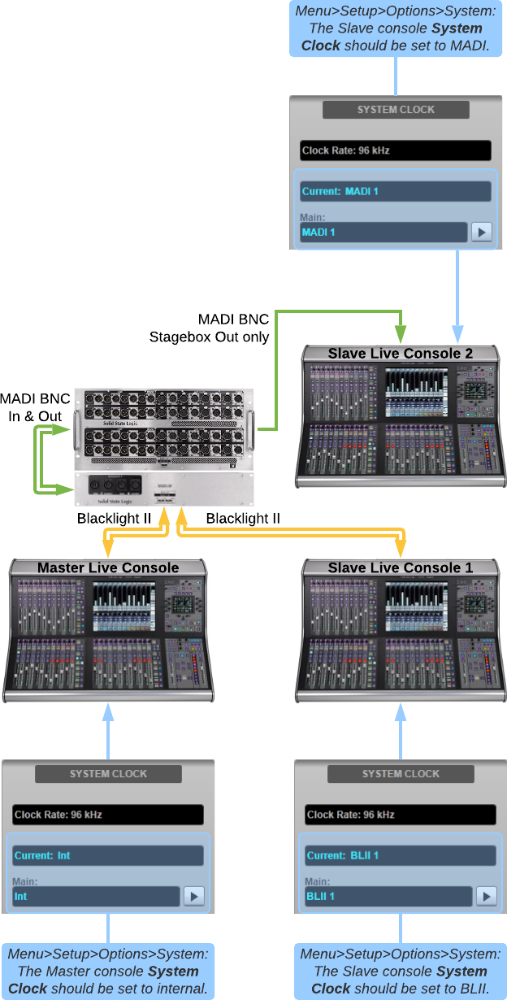

System Example F: Connecting stageboxes to three Live consoles
- Follow the instructions in System Example E to connect the stagebox(es) to the first two consoles via Blacklight. The third console will be a second Slave console, set up as described below.
- Connect each stagebox MADI port 3 (Out only) to the third Live console using a single 75 Ω BNC coax cable (max 75 m, conforming to spec defined in the Installation Guide).
- If a redundant MADI connection is required, ensure each stagebox MADI port 3 is connected to an odd numbered port on the third console and connect each stagebox MADI port 4 (Out only) to the next console MADI port (e.g. stagebox ports 3 & 4 to the third console ports A1 & A2 respectively).
- Set the third console to clock from the MADI port connected to the stagebox, as described in the main Clocking section.
- If a redundant MADI connection is being used, turn on Redundancy Status for the relevant pair of MADI ports in the third console's I/O page.
- The first two consoles and all stageboxes will be clocked as in System Example E. The third console will be clocked to the stagebox (which is clocked from the Master Console via the Blacklight Concentrator).

System Examples
Setup: Clocking - System Example A: Connecting stageboxes to a Live console via MADISetup: Clocking - System Example B: Clocking the Live console from an external source
Setup: Clocking - System Example C: Connecting stageboxes to two Live consoles via MADI
Setup: Clocking - System Example D: Connecting stageboxes to a Live console over Blacklight II
Setup: Clocking - System Example E: Connecting stageboxes to two Live consoles over Blacklight II
Setup: Clocking - System Example F: Connecting stageboxes to three Live consoles
Setup: Clocking - System Example G: Daisy-chained stageboxes for 48 kHz operation
Useful Links
ClockingIndex and Glossary